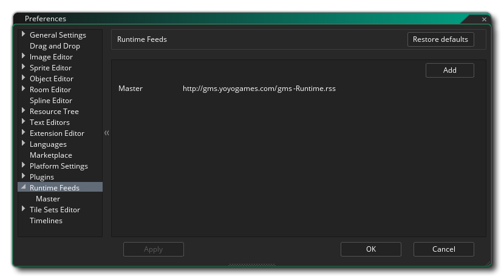
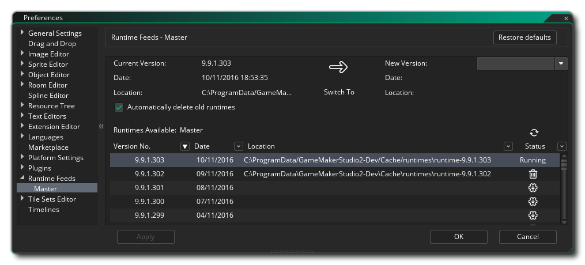

The Runtime Feeds Preferences are used to display and change the currently installed runtimes as well as the runtime in current use. GameMaker Studio 2 can have several different runtime tools installed at any one time and you can set which one to use from this preference. Ideally you want to be using the most up-to-date runtime, but sometimes it may have an issue, or you may be required to use an older one for comparability, etc... and so you can change the runtime tools that GameMaker Studio 2 uses to build your game here.
The initial section of this preference is related to where you pull the runtime tools from and requires you to input a URL to an RSS feed. This feed will then be scanned for updates to the runtime tools which can then be downloaded and installed. This section will show the Master runtime feed URL by default, but you can click the Add button to create a new Runtime Feed where you give the name and the URL for the RSS feed, and then click Apply to tell GameMaker Studio 2 to access it. You will need to close and re-open the Preferences window for the new feed to be shown.
Once a Runtime Feed has been created it will be listed in this
section as a sub-category, and you should always have at least one
feed listed (by default this would be the Master feed). Regardless
of the runtime being used, they will all have the same features,
outlined below using the Master feed as an example:

The Runtime Feed preferences are used to select, install and un-install the different runtime tools. At the top you have the current runtime tools being used, the date it was created, and the location that it is stored in on the hard drive. Beneath these details you can find a list of all the available runtimes, and you can choose any one from this list to change to being the "running" runtime used for compiling your projects.
To select a different runtime to use, simply find it in the list
and then double click  on it. If the runtime has not been
downloaded and installed, then you will be prompted to do so, and
once it has been installed you will be prompted to close and
restart the IDE so that the new runtime can be initialised.
on it. If the runtime has not been
downloaded and installed, then you will be prompted to do so, and
once it has been installed you will be prompted to close and
restart the IDE so that the new runtime can be initialised.
This runtime list details all the available runtimes, their version number, the date they were released, and, if it they are installed, the path to where they have been installed to. The right hand side also shows the different status icons which are as follows:
| This marks the current runtime that has been selected for use when building your projects. | |
| Clicking this will initiate the download and installation of the selected runtime (a status bar will be shown in the top right of the IDE). | |
| Clicking this will remove the selected runtime from your hard drive. |
You can update the runtime list at any time from the given RSS
feed clicking the refresh button  .
.